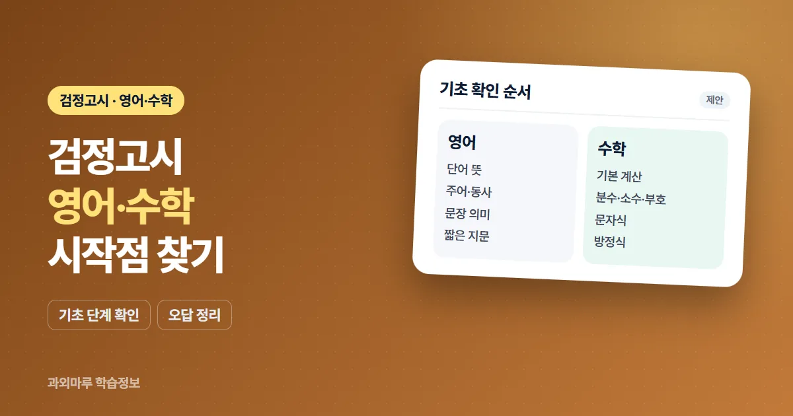

- 영어 확인 순서: 단어 뜻 → 주어·동사 → 문장 의미 → 짧은 지문
- 수학 확인 순서: 기본 계산 → 분수·소수·부호 → 문자식 → 방정식
- 오답은 모르는 개념 / 계산·해석 실수 / 조건 누락으로 나눠 복습
검정고시 영어·수학, 공부를 시작하기 전에 무엇을 확인할까요?
먼저 준비하는 과정(중졸·고졸)과 최근에 풀어 본 문제, 그리고 내가 혼자 설명할 수 있는 내용을 확인합니다. 이 세 가지를 보면 어려운 문제부터 할지, 기초 단계부터 다시 할지 판단할 수 있습니다.
서울특별시교육청 안내에 따르면 일반적인 응시자는 중졸·고졸 검정고시 모두 영어와 수학이 필수 과목입니다. 과정별 전체 과목과 합격 기준은 고졸 검정고시 과목·합격 점수 정리 글과 해당 회차 공고에서 확인해 주세요. 이 글은 시험 범위가 아니라, 기초가 부족할 때 어디서부터 공부를 시작할지 찾는 방법을 다룹니다.
| 확인할 것 | 스스로 묻는 질문 (예시) | 이렇게 활용합니다 |
|---|---|---|
| 준비 과정 | 중졸과 고졸 중 어느 과정을 준비하나요? | 과정에 맞는 교재와 기출문제를 고르는 기준으로 삼기 |
| 최근에 풀어 본 문제 | 최근 문제를 풀었을 때 어디서부터 손을 대기 어려웠나요? | 막힌 문제의 유형을 적어 두고 아래 단계 확인에 사용 |
| 혼자 설명할 수 있는 내용 | 영어 문장의 주어·동사를 찾거나, 분수 덧셈 과정을 말로 설명할 수 있나요? | 설명할 수 있는 단계는 짧게 복습, 설명이 막히는 단계부터 공부 시작 |
아래 영어·수학 예제는 이 글에서 공부 단계를 확인하기 위해 직접 만든 연습 예제이며, 실제 검정고시 기출문제가 아닙니다. 소개하는 단계 순서도 공식 시험 범위나 교육과정이 아니라 기초 단계를 확인하기 위한 학습 제안입니다.
검정고시 영어는 어디서부터 다시 시작하면 좋을까요?
영어는 단어 뜻 → 짧은 문장의 주어·동사 → 문장 전체 의미 → 짧은 지문 순서로 확인하고, 처음 막히는 단계부터 공부를 시작합니다. 특히 '단어를 몰라서' 막히는지 '문장 구조를 몰라서' 막히는지를 구분하는 것이 중요합니다.
- 단어 뜻 — 문장 속 단어의 뜻을 대부분 아는지 확인합니다.
- 주어·동사 찾기 — 짧은 문장에서 '누가(주어)'와 '무엇을 한다(동사)'를 찾을 수 있는지 확인합니다.
- 문장 의미 — 주어·동사를 바탕으로 문장 전체를 우리말로 옮길 수 있는지 확인합니다.
- 짧은 지문 — 서너 문장짜리 글을 읽고 내용을 묻는 질문에 답할 수 있는지 확인합니다.
연습 예제 1 (직접 만든 예제) — 주어·동사 찾기
My mother works at a hospital.
풀이: 주어는 My mother(우리 어머니), 동사는 works(일한다)입니다. at a hospital은 '병원에서'라는 장소를 덧붙이는 말입니다. 문장 뜻은 '우리 어머니는 병원에서 일하신다'입니다. 주어가 한 사람(My mother)이고 현재의 일을 말하므로 동사 끝에 -s가 붙었습니다.
연습 예제 2 (직접 만든 예제) — 짧은 지문
Minsu gets up at seven every morning. He walks to the station because the bus is often late. On weekends, he sleeps until nine.
질문: 민수가 버스를 타지 않고 역까지 걸어가는 이유는 무엇인가요?
풀이: 둘째 문장의 because the bus is often late(버스가 자주 늦기 때문에)가 이유입니다. because 뒤에는 이유가 이어진다는 점을 알면 답을 찾기 쉽습니다.
| 막히는 경우 | 이런 모습이라면 | 먼저 할 공부 |
|---|---|---|
| 단어를 모르는 경우 | station, often, late 같은 단어 뜻을 몰라 문장 전체가 막힘 | 자주 나오는 기초 단어를 소리 내어 읽으며 뜻과 함께 익히기 |
| 문장 구조에서 막히는 경우 | 단어 뜻은 아는데 문장을 우리말로 옮기면 어색하거나, 어디까지가 한 덩어리인지 모름 | 짧은 문장에서 주어·동사 찾기, because·and 같은 연결어로 문장 나누기 |
단어를 모르는 경우라면 단어 공부를 늘리고, 문장 구조에서 막히는 경우라면 단어장보다 짧은 문장을 나눠 읽는 연습에 시간을 더 쓰는 것이 효율적입니다.
검정고시 수학은 어디서부터 다시 시작하면 좋을까요?
수학은 기본 계산 → 분수·소수·부호 → 문자식 → 방정식 순서로 짧은 문제를 풀어 보고, 처음 틀리거나 설명하기 어려운 단계부터 공부를 시작합니다. 앞 단계가 흔들리면 뒤 단계 문제에서 계속 실수가 나오기 때문입니다.
아래는 각 단계를 확인하기 위해 직접 만든 연습 예제입니다. 답만 맞히기보다 풀이 과정을 말로 설명할 수 있는지 함께 확인해 보세요.
| 단계 | 연습 예제 | 답과 풀이 |
|---|---|---|
| 1. 기본 계산 | 12 − 3 × 2 | 6. 곱셈을 먼저 계산해 3 × 2 = 6, 그다음 12 − 6 = 6입니다. 앞에서부터 계산해 18이 나왔다면 계산 순서를 다시 봅니다. |
| 2. 분수·소수·부호 | ① 1/2 + 1/3 ② (−3) + 5 ③ (−2) × (−4) | ① 5/6. 분모를 6으로 맞춰 3/6 + 2/6 = 5/6입니다. ② 2. ③ 8. 음수끼리 곱하면 양수가 됩니다. 0.5는 1/2과 같은 수라는 것도 함께 확인합니다. |
| 3. 문자식 | ① x = 3일 때 2x + 1의 값 ② 3a + 2a − a를 간단히 | ① 7. 2 × 3 + 1 = 7입니다. ② 4a. 문자가 같은 항끼리 계수만 계산해 3 + 2 − 1 = 4입니다. |
| 4. 방정식 | 2x + 5 = 11 | x = 3. 양쪽에서 5를 빼면 2x = 6, 양쪽을 2로 나누면 x = 3입니다. x = 3을 넣으면 2 × 3 + 5 = 11로 맞는지 검산할 수 있습니다. |
예를 들어 4단계 방정식에서 틀렸는데 원인이 '양쪽에서 같은 수를 빼는 이유'를 모르는 것이라면 방정식부터, '6 ÷ 2' 같은 계산에서 실수한 것이라면 1단계 계산 연습부터 다시 하는 식으로 시작점을 정합니다. 단원 이름보다 실제로 막힌 계산이나 개념을 기준으로 삼는 것이 핵심입니다.
틀린 문제는 어떻게 나눠서 복습하면 좋을까요?
틀린 문제는 '모르는 개념', '계산·해석 실수', '문제 조건 누락' 세 가지로 나눠 정리하면 복습할 내용이 분명해집니다. 같은 오답이라도 원인에 따라 다시 공부할 방법이 다르기 때문입니다.
| 오답 원인 | 이런 경우 (예시) | 복습 방법 |
|---|---|---|
| 모르는 개념 | 음수끼리 곱하면 왜 양수인지 모름 / because의 역할을 모름 | 개념 설명을 다시 읽고 같은 유형의 쉬운 문제를 두세 개 더 풀기 |
| 계산·해석 실수 | 곱셈보다 뺄셈을 먼저 계산함 / 아는 단어인데 뜻을 반대로 옮김 | 틀린 줄을 표시하고, 같은 문제를 처음부터 다시 풀며 실수한 지점을 말로 적기 |
| 문제 조건 누락 | '옳지 않은 것'을 고르라는 조건을 놓침 / 단위나 '모두 고르시오'를 못 봄 | 문제를 읽을 때 조건에 밑줄을 긋는 습관 들이기, 오답 옆에 놓친 조건을 그대로 적기 |
오답 노트에는 정답보다 '왜 틀렸는지'와 '다음에 무엇을 확인할지'를 한 줄씩 적는 것이 좋습니다. 며칠 뒤 같은 문제를 다시 풀어 보고, 맞히면 표시를 지워 나가면 복습할 양이 점점 줄어드는 것을 확인할 수 있습니다.
하루 공부 시간은 어떻게 나누면 좋을까요?
공부 시간은 실제로 꾸준히 낼 수 있는 시간을 기준으로, 영어·수학 기초와 오답 복습을 나눠 배치합니다. 아래는 이해를 돕기 위한 예시이며, 이 시간대로 공부한다고 정해진 기간 안에 합격하거나 점수가 오른다는 뜻은 아닙니다.
| 가능한 시간 (예시) | 영어 | 수학 | 오답 복습 |
|---|---|---|---|
| 하루 30분, 주 4회 | 10분: 단어 소리 내어 읽기 | 15분: 막힌 단계 문제 3~4개 | 5분: 전날 틀린 문제 다시 보기 |
| 하루 60분, 주 5회 | 25분: 단어 10분 + 짧은 문장 나눠 읽기 15분 | 25분: 개념 확인 + 연습 문제 | 10분: 오답 원인 정리 |
| 하루 90분, 주 5회 | 35분: 단어 + 문장 + 짧은 지문 1개 | 40분: 단계별 문제 + 검산 | 15분: 오답 다시 풀기 |
처음에는 계획보다 적게 하더라도 정한 요일에 빠지지 않는 것을 목표로 삼습니다. 영어와 수학 중 기초가 더 부족한 과목에 시간을 조금 더 배정하고, 다른 과목은 검정고시 일정 안내에서 시험 시기를 확인한 뒤 전체 계획에 맞춰 나눕니다.
혼자 복습할 부분과 설명이 필요한 부분은 어떻게 구분할까요?
답을 보고 왜 그런지 스스로 설명할 수 있는 문제는 혼자 복습하고, 해설을 읽어도 이해되지 않거나 같은 실수가 반복되는 부분은 설명과 피드백을 받는 것이 좋습니다.
| 혼자 복습해도 되는 경우 | 설명·피드백이 필요한 경우 |
|---|---|
| 해설을 읽으면 바로 이해되고, 다시 풀었을 때 맞힘 | 해설을 여러 번 읽어도 왜 그런지 설명하기 어려움 |
| 실수의 원인을 스스로 찾을 수 있음 | 같은 유형에서 비슷한 실수가 계속 반복됨 |
| 단어 암기처럼 반복으로 익히는 내용 | 문장 구조, 부호 계산처럼 원리를 이해해야 하는 내용 |
| 공부 계획을 스스로 지키고 있음 | 어디서부터 공부해야 할지 시작점을 정하기 어려움 |
설명이 필요한 부분은 질문할 내용을 미리 적어 두면 도움을 받을 때 시간을 아낄 수 있습니다. '이 문제의 어느 줄에서 막혔는지'를 구체적으로 적어 두는 것만으로도 원인을 찾기가 훨씬 쉬워집니다. 1:1 수업에서는 일반적으로 과목별 현재 수준을 먼저 확인한 뒤, 막히는 단계부터 설명하고 문제 풀이를 함께 연습하는 방식으로 진행하는 경우가 많습니다.
자주 묻는 질문
검정고시 영어 기초가 거의 없는데 어디서부터 시작하나요?
짧은 문장을 읽고 단어 뜻을 아는지, 주어와 동사를 찾을 수 있는지부터 확인해 보세요. 단어를 몰라서 막힌다면 기초 단어부터, 단어는 아는데 문장이 어색하게 옮겨진다면 짧은 문장을 나눠 읽는 연습부터 시작하는 것이 좋습니다.
검정고시 수학을 노베이스로 시작해도 되나요?
기본 계산, 분수·소수·부호, 문자식, 방정식 순서로 짧은 문제를 풀어 보고 처음 막히는 단계부터 시작하면 됩니다. 단원 이름보다 실제로 막힌 계산이나 개념을 기준으로 시작점을 정하는 것이 중요합니다.
기출문제는 언제부터 풀면 좋나요?
기초 단계를 확인한 뒤 기출문제를 풀며 어떤 유형에서 막히는지 점검하는 데 활용할 수 있습니다. 기출문제에서 틀린 문제는 모르는 개념, 계산·해석 실수, 조건 누락으로 나눠 복습해 보세요.
검정고시 영어·수학은 중졸과 고졸 모두 필수인가요?
서울특별시교육청 안내에 따르면 일반적인 응시자는 중졸·고졸 검정고시 모두 영어와 수학이 필수 과목입니다. 응시 자격에 따라 과목이 다를 수 있으므로 해당 회차 공고에서 확인해 주세요.
참고 자료
- 서울특별시교육청, 「중학교 졸업학력 검정고시 안내(응시자격 및 응시과목)」 — https://www.sen.go.kr/www/news/exam/gosiexam/gosiexam_2.jsp
- 서울특별시교육청, 「고등학교 졸업학력 검정고시 안내(응시자격 및 응시과목)」 — https://www.sen.go.kr/www/news/exam/gosiexam/gosiexam_3.jsp
이 글은 검정고시 영어·수학 기초가 부족한 분을 위한 일반적인 참고 정보입니다. 글에 나온 영어·수학 문제는 직접 만든 연습 예제이며 실제 기출문제가 아닙니다. 단계 순서와 시간 배분은 학습 제안이며, 응시 자격·과목·합격 기준·일정은 해당 회차 시·도교육청 공고를 확인해 주세요.
준비하는 과정과 최근에 풀어 본 문제, 막히는 부분을 남겨주시면 상담 내용을 확인해 안내드립니다.